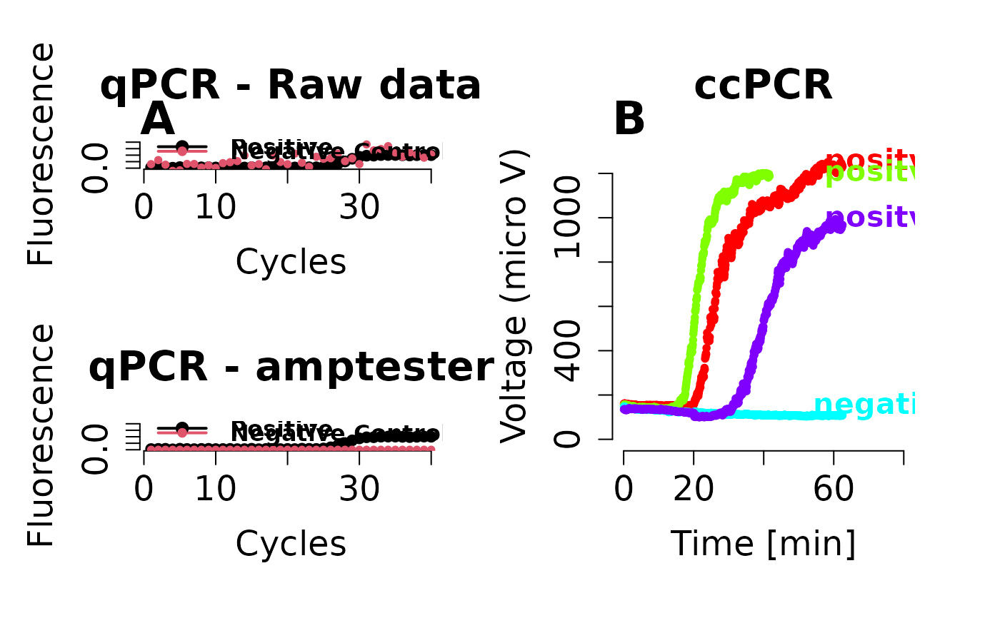

Amplification test
amptester.RdThe amptester function tests if an amplification is significant.
amptester(y, manual = FALSE, noiselevel = 0.08, background = NULL)
Arguments
| y | is a vector containing the fluorescence values. |
|---|---|
| manual | switches between a statistical test (based on a Wilcoxon rank sum
test ( |
| noiselevel | can be set to a user defined value as threshold for a significant amplification signal. |
| background | is the range of the background signal in the amplification curve.
The values can be added by the user or taken from the
|
Details
This function tries to estimate if data indicates an amplification process.
Several instances of tests are included. The first involves a
semiautomatic test if the range of the background is lower than the range
of the assumed signal. To differ between the ranges an instance of
bg.max is used. Herein, this function assumes that an
amplification takes place in case the signal of the amplification is larger
than the median + 5 * mad than
the background. The automatic test uses a Wilcoxon rank sum test
wilcox.test to compare the first and the last elements
of the data. The input values are delivered by head
and tail, respectively. For other methods please refer
to the references listed below. Instead of assigning a zero to negative
amplification reaction uses the current implementation of
amptester very small random values. This is because
some post function might fail in case all values are set to zero.
# FIRST TEST - Shapiro test (SHt)
This is a simple test based on the hypothesis that in case amplification curve data come from noise is the distribution similar to a normal distribution. The Shapiro's normality test is used to test this hypothesis. If p is >= 5e-04, then the distribution of the curve data indicates noise (no amplification).
# SECOND TEST - Resids growth test (RGt)
This tests if fluorescence values in a linear phase are stable. Whenever no amplification occurs, fluorescence values quickly deviate from linear model. Their standardized residuals will be strongly correlated with their value. For real amplification curves, situation is much more stable. Noise (that means deviations from linear model) in background do not correlate strongly with the changes in fluorescence. The decision is based on the threshold value (here 0.5).
# THIRD TEST - Linear Regression test (LRt)
This test determines the R^2 by a linear regression. The R^2 are determined from a run of circa 15 percent range of the data. If a sequence of more than six R^2s is larger than 0.8 is found that is likely a nonlinear signal. This is a bit counterintuitive because R^2 of nonlinear data should be low.
# FOURTH TEST (MANUAL) - Threshold test (THt)
This a commonly employed method. In the manual test one needs to define a fixed threshold. If the amplification curve signal exceeds the threshold than the amplification reaction is positive. Waring: This method will report positive amplification reaction if a negative amplification has a positive trend.
# FOURTH TEST (AUTOMATIC) - Threshold test (THt)
Takes the first 20 percent and the last 15 percent of any input data set (amplification curve) and perform a Wilcoxon rank sum tests with the head (nh) and tail (nt). This test is recommended over the manual THt. Warning: This method may report positive amplification reaction if a negative amplification has a positive trend.
# FIFTH TEST - Signal level test (SLt)
The meaningfulness of an amplification curve reaction can be tested by comparison of the signals 1) A robust "sigma" rule by median + 2 * mad 2) comparison of the signal/noise ratio. If less than 1.25 (25 percent) signal increase it is likely that nothing happened during the reaction. Waring: This method may report positive amplification reaction if a negative amplification has a positive trend.
# SIXTH TEST - pco test (pco)
This test determines if the points in an amplification curve (like a polygon, in particular non-convex polygons) are in a "clockwise" order. The sum over the edges result in a positive value if the amplification curve is "clockwise" and is negative if the curve is counter-clockwise ((x2 - x1)(y2 + y1)). From experience is noise positive and "true" amplification curves "highly" negative. This test depends on the definition of a threshold.
# SEVENTH TEST - Slope ratio (SlR)
Uses the inder function to find the approximated first derivative maximum, second derivative minimum and the second derivative maximum. Next the raw fluorescence at the approximated second derivative minimum and the second derivative maximum are taken from the original data set. The fluorescence intensities are normalized to the maximum fluorescence of this data. This data is used for a linear regression. Where the slope is used.
Value
An object of amptest class containing result of the test as well as
the original data.
References
Frank, D. N. BARCRAWL and BARTAB: software tools for the design and implementation of barcoded primers for highly multiplexed DNA sequencing BMC bioinformatics, 2009, Vol. 10, pp. 362
Peirson, S. N., Butler, J. N. and Foster, R. G. Experimental validation of novel and conventional approaches to quantitative real-time PCR data analysis Nucleic Acids Research, 2003, Vol. 31(14), pp. e73-e73
Rao, X., Lai, D. and Huang, X. A New Method for Quantitative Real-Time Polymerase Chain Reaction Data Analysis Journal of Computational Biology, 2013, Vol. 20(9), pp. 703-711
Ruijter, J. M., Ramakers, C., Hoogaars, W. M. H., Karlen, Y., Bakker, O., Hoff, M. J. B. v. d. and Moorman, A. F. M. Amplification efficiency: linking baseline and bias in the analysis of quantitative PCR data, Nucleic Acids Research, 2009, Vol. 37(6), pp. e45-e45
Rutledge, R. G. and Stewart, D. A kinetic-based sigmoidal model for the polymerase chain reaction and its application to high-capacity absolute quantitative real-time PCR BMC biotechnology, 2008, Vol. 8, pp. 47
Tichopad, A., Dilger, M., Schwarz, G. and Pfaffl, M. W. Standardized determination of real-time PCR efficiency from a single reaction set-up Nucleic Acids Research, 2003, Vol. 31(20), pp. e122
Wilhelm, J., Pingoud, A. and Hahn, M. SoFAR: software for fully automatic evaluation of real-time PCR data BioTechniques, 2003, Vol. 34(2), pp. 324-332
Zhao, S. and Fernald, R. D. Comprehensive Algorithm for Quantitative Real-Time Polymerase Chain Reaction Journal of computational biology: a journal of computational molecular cell biology, 2005, Vol. 12(8), pp. 1047-1064
Author
Stefan Roediger, Michal Burdukiewicz
Examples
# First example # Arrange graphs in orthogonal matrix and set parameter for the plot. par(las = 0, bty = "n", cex.axis = 1.5, cex.lab = 1.5, font = 2, cex.main = 1.8, oma = c(1,1,1,1)) # Simulation of an amplification curve with 40 cycles and a Cq of # circa 28. The amplification curve of "pos" (positive) has low # noise and the amplification curve of "neg" (negative) has high # noise. pos <- AmpSim(cyc = 1:40, Cq = 28, noise = TRUE, nnl = 0.03) neg <- AmpSim(cyc = 1:40, Cq = 28, noise = TRUE, nnl = 0.8) # Plot the raw data of the simulations. par(fig = c(0,0.5,0.5,1)) plot(NA, NA, xlim = c(1, 40), ylim = c(0, 2.1), xlab = "Cycles", ylab = "Fluorescence", main = "qPCR - Raw data", type = "b")legend(1, 2, c("Positive", "Negative Control (noise)"), pch = c(19,20), col = c(1,2), lwd = 2, bty = "n")# Plot data again after an analysis by ampteser. "neg" is set to small # random numbers, while "pos" remains unchanged. par(fig = c(0,0.5,0,0.5), new = TRUE) plot(NA, NA, xlim = c(1, 40), ylim = c(0, 2.1), xlab = "Cycles", ylab = "Fluorescence", main = "qPCR - amptester", type = "b")#> #>legend(1, 2, c("Positive", "Negative Control (noise)"), pch = c(19,20), col = c(1,2), lwd = 2, bty = "n")# Use of amptester for time-dependent measurements. Amplification curves # from the capillaryPCR data set were processed in a loop. The results of # amptester are added to the raw data. par(fig = c(0.5,1,0,1), new = TRUE) colors <- rainbow(8) plot(NA, NA, xlim = c(0,80), ylim = c(0,1300), xlab = "Time [min]", ylab = "Voltage (micro V)", main = "ccPCR")sapply(c(1,3,5,7), function(i) { xy.tmp <- cbind(capillaryPCR[1:750, i], capillaryPCR[1:750, i + 1]) # Use amptester to analyse the amplification curve. # Note: The decisions of amptester can be invoked via res.ampt@decisions # in the present example. res.ampt <- amptester(xy.tmp[, 2]) # Use the "decisions" of amptester in a logic to automatically decide if an # amplification reaction is positive. In this example linear regression test # (lrt.test) and the threshold test (tht.dec) are used. res.ampt <- ifelse(res.ampt@decisions[2] == TRUE && res.ampt@decisions[4] == TRUE, "positve", "negative") # Plot the amplification curve with the decisions. lines(xy.tmp[, 1], xy.tmp[, 2], type = "b", pch = 20, col = colors[i]) text(75, max(na.omit(xy.tmp[, 2])), res.ampt, cex = 1.3, col = colors[i]) } )#> Warning: essentially perfect fit: summary may be unreliable#> Warning: essentially perfect fit: summary may be unreliable#> Warning: NA values constitutes more than 0.3 of the input data. #> Approximation may not be correct.#> Warning: More than 2 missing values in last 6 elements. #> Approximation may not be correct.#> Warning: essentially perfect fit: summary may be unreliable#> Warning: essentially perfect fit: summary may be unreliable#> [[1]] #> NULL #> #> [[2]] #> NULL #> #> [[3]] #> NULL #> #> [[4]] #> NULL #># Second Example # Example to test an amplification reaction. # Simulate first a positive amplification curve with 45 cycles and than a # negative amplification curve with 45 cycles. The negative amplification # curve is created from a normal distribution # fluo.neg <- rnorm(45) fluo.pos <- AmpSim(cyc = 1:45, Cq = 45, ampl = 40, noise = TRUE, nnl = 0.03)[, 2] plot(NA, NA, xlim = c(1, 45), ylim = c(-1, 45), xlab = "Cycles", ylab = "Fluorescence", main = "Simulation of a qPCR with 45 Cycles", type = "b")#> #>legend(1,40, c("Positive", "Negative Control (noise)", "noise pattern"), pch = c(20,20,1), col = c(1,2,2), lwd = 2)